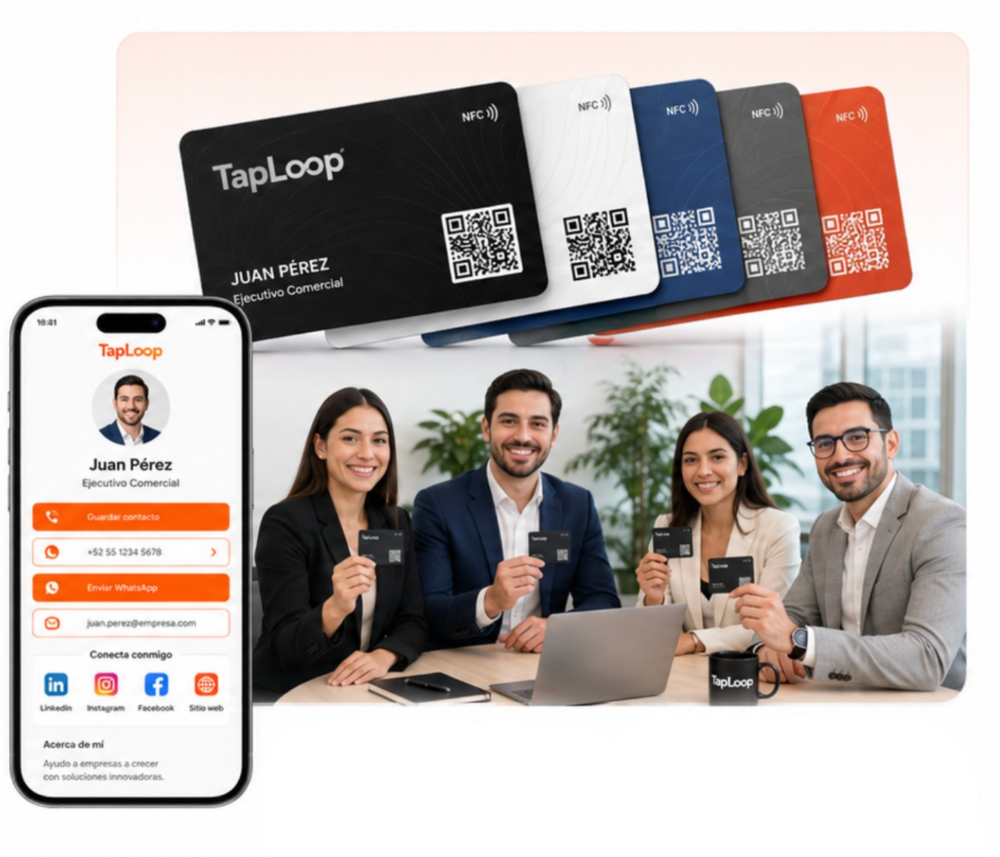
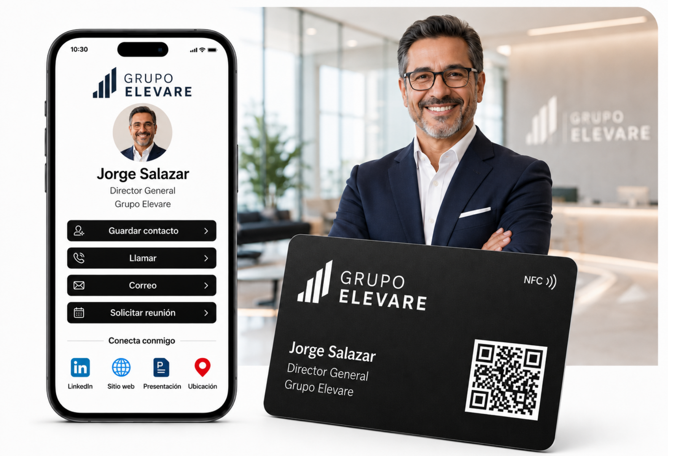

One Profile Per Employee
Each person can share name, role, phone, email, WhatsApp, social links, calendar, and website.
For companies and teams
Give your team a consistent business NFC card experience while each person shares their own digital profile, role, phone, email, WhatsApp, website, and links.

TapLoop helps teams avoid mismatched cards, outdated details, and scattered contact links.
Each person can share name, role, phone, email, WhatsApp, social links, calendar, and website.
Cards keep a consistent logo, color system, layout, and brand style.
Use PVC cards for broad teams and metal cards for executives, managers, and partners.
Add new team members later while keeping the approved brand system.
We guide you from project definition to delivery of cards ready to use.
Confirm quantity, materials, team goals, and profile fields.
Use a structured template to organize each employee profile.
Review the card and profile system before production.
We program NFC, verify QR codes, and ship the finished cards.
Use TapLoop for sales teams, real estate groups, automotive advisors, recruiting teams, events, and executive leadership.
Share contact details, brochures, presentations, booking links, and follow-up resources.
Share inventory, promotions, WhatsApp, and direct contact from one profile.

Give leadership teams a premium, consistent, and memorable networking tool.
Answers about TapLoop NFC cards, digital profiles, and team solutions.
It is a physical card with an NFC chip and QR code that opens a digital profile with contact details, WhatsApp, social media, website, and links.
No. The digital profile opens in the phone browser through NFC or QR code.
Yes. The card and profile can be customized with your logo, colors, name, role, QR code, and key links.
Yes. We can create a consistent visual system and one digital profile for each employee.

Ready to start?
Tell us how many cards you need, which card type you prefer, and what your digital profile should include.